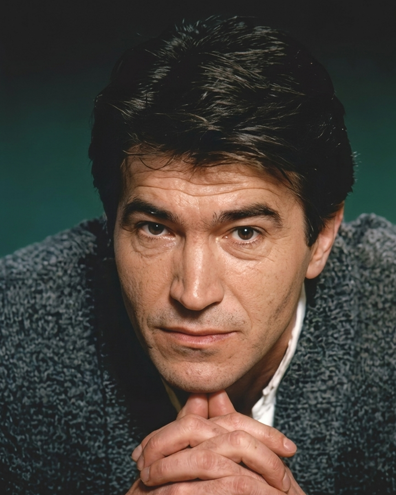
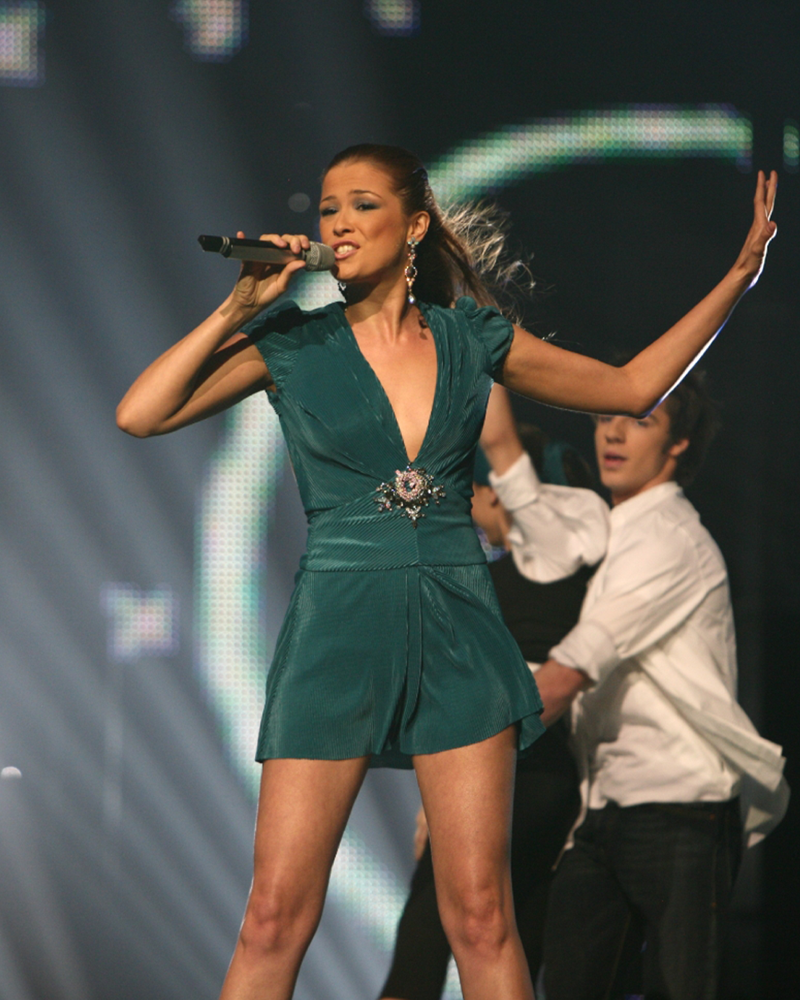
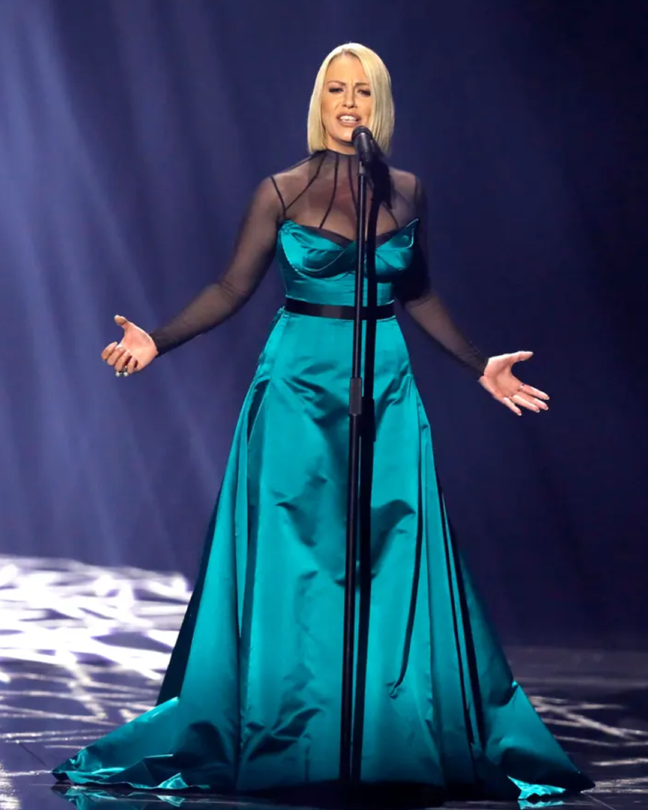
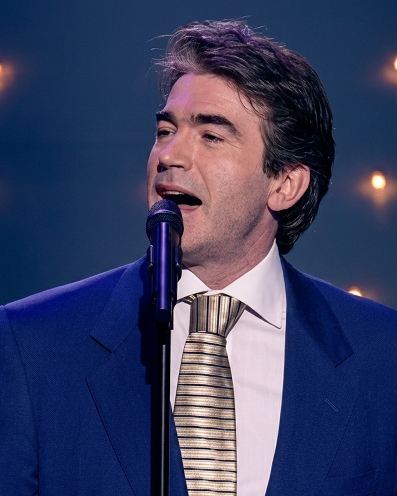

Vlado Janevski was the twenty-fifth and final performer at Eurovision in Birmingham on May 9, 1998. He sang “Ne zori, zoro,” a ballad composed by Grigor Koprov for which he wrote the Macedonian lyrics. Two years earlier, Kaliopi’s “Samo ti” had been eliminated in an audio-only qualifier, so there had been no performance to watch on the night of the final. Janevski’s appearance was the first time a Macedonian entry made it onto that stage.
By then, Janevski had spent years singing in bands and recording on his own. Born in Skopje in 1960, he released his first solo album, Parče duša, in 1993 and won Makfest the following year with “Eden baknež.” Twenty songs competed at Universal Hall on March 7, 1998. The lineup included Kaliopi, Dule & Koki, Suzana Spasovska, Karolina Gočeva, and Toše Proeski with Megatim Plus. Viewers chose the winner by telephone. Janevski received 38,642 votes, ahead of Sašo Gigov-Giš’s 34,774 for “Samovilska svadba.” Gočeva finished fourth, Proeski eighth, and Kaliopi ninth.



The English-language recording is titled “Somebody Stop the Dawn,” which gives the song its central request. In the Macedonian lyrics, Janevski’s speaker addresses his mother as well as the dawn. The woman’s family opposes the relationship, and the speaker drinks and talks of dancing drunk. The refrain keeps returning to the one thing he asks for directly: a little more time before morning.
Janevski sang in Macedonian under the provisional designation “FYR Macedonia,” which appeared in the broadcast during the name dispute. A live orchestra still accompanied the songs in Birmingham, and the contest still required entrants to sing in a national language. The rules changed in 1999, when Eurovision dropped the orchestra and let performers choose their language. By the time Macedonia returned in 2000 with XXL, both features of the contest in which Janevski had debuted were gone.
Janevski finished 19th with 16 points: six from Croatia, four from Slovenia, and three each from Romania and Slovakia. Macedonia sat out the next contest under the relegation system. The national final in Skopje is worth returning to for a different set of names. Gočeva went on to sing at Eurovision in 2002 and 2007, and Proeski represented Macedonia in 2004. Elena Risteska finished 12th in 2006, and in 2019 Tamara Todevska won the jury vote with “Proud” and placed seventh overall, the country’s best result.